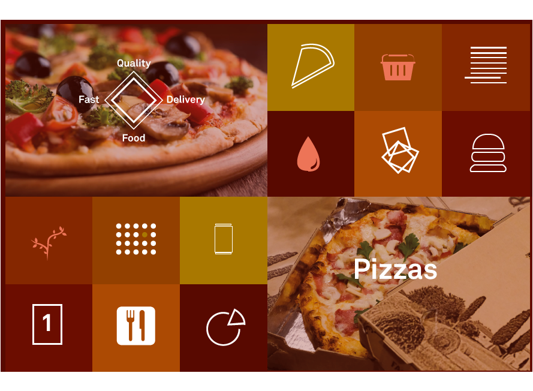
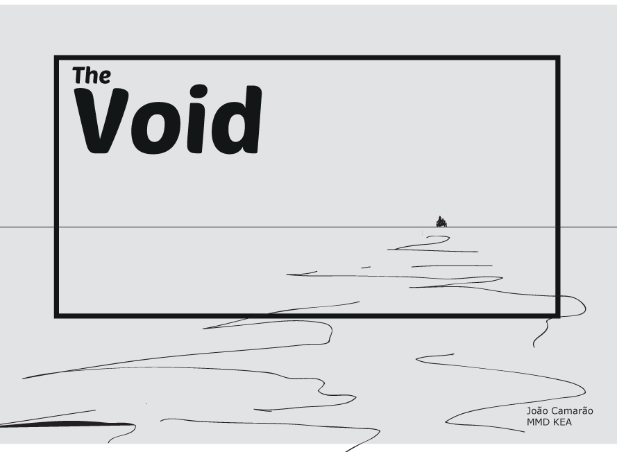
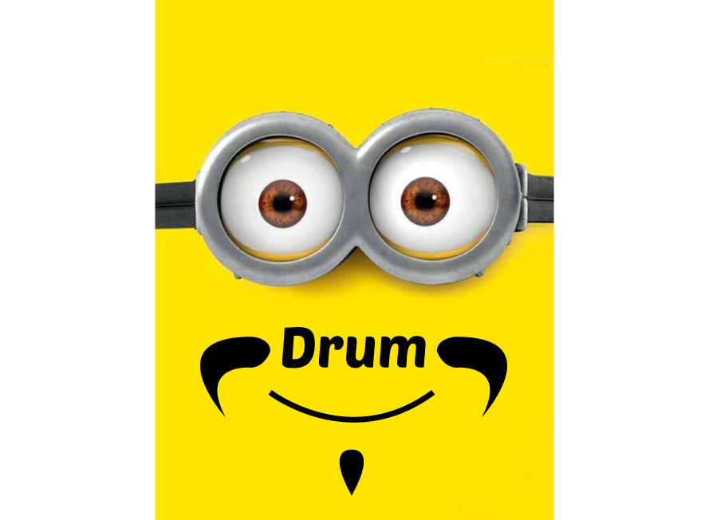
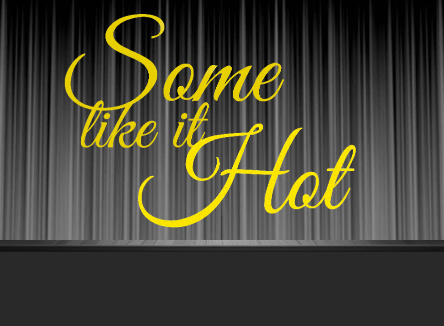
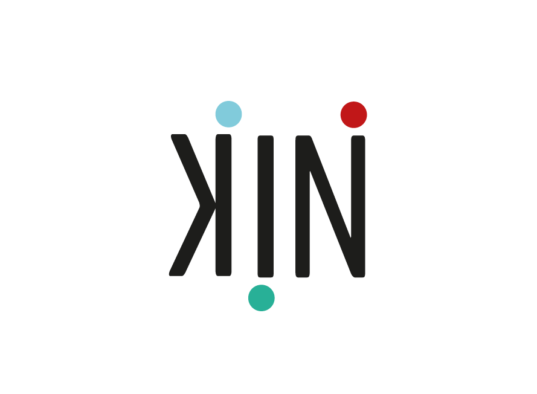
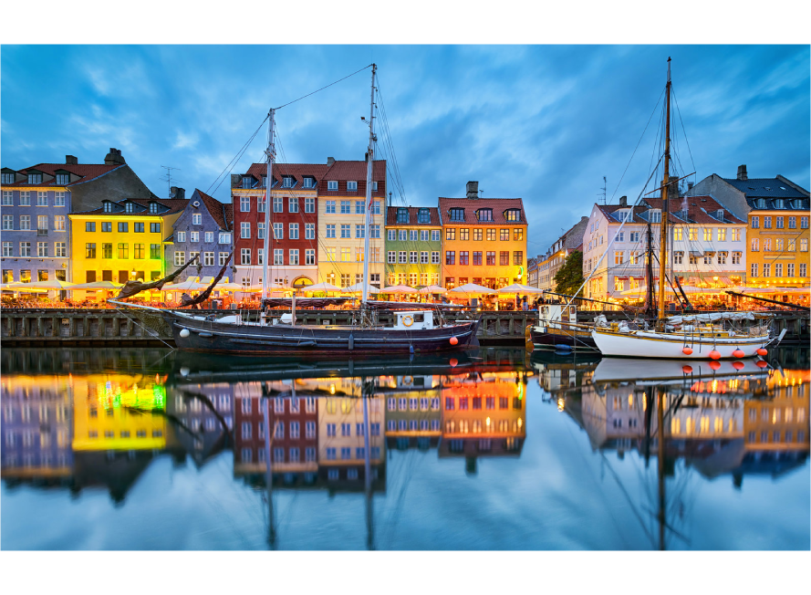

Basic Web / 1ST PIZZA DIRECT

1ST PIZZA WEBSITE /
Presentation Document
Basic web helped me as a web designer to learn how to structure a projectc, to analyse and debate design principles as also to work with color, typografy and diferent design factors. Some of the requirements for this theme where learning how to use XD to prototype my projects, know how to use user tests so that my work is well defended and to understand and produce responsive web design. For this theme I present the project group that consisted in transforming an old website in to a new and better one. (link's below the image)
Basic Animation / THE VOID

Interactive Animation /
basic animation /
Style tile /
Sequence Diagram /
storyteling
Basic animation was my favorite theme, it provided me with my first animation and teached me several ways to do it. The theme consisted in learning to use CSS and Java Script to animate. In the prosses i also learned the importance of storytelling, style tiles and sequence diagrams. I did several works for this theme, this is 'The Void' a project that i had started a few years ago but never had the courage to animate it, it consistes in several files that explain the intere process being the interactive animation the final project. (link's below the image)
Project Pool 1

Exercise 1
Project pool was a small assignment that we needed to do with another class member and we had several topics to choose from. For our first exercice we choose the drum topic that concisted in create a drum and add some buttons so that the user could play it. (links below the image)
Interactive Teaser

Personas Collage /
Summary Of Expert Test /
Story Board /
Sequence Diagram /
Interactice GIF /
Interactice Teaser
For the last project we had a group assignment. The theme was a movie called 'Some like it hot' and we needed to grab the movie environment and create an interactive teaser to present it to a school. For this we had to apply every thing we had learned until now. Design was very important because we had to stablish some rules so that everything stayed precise. For me this assignment, the most important aspect was the group work, learn to devide and keep up with others so that the project could evolve. (links below the image)
Basic Ux / Kin

Bussiness Model Canvas /
Design Program /
Report /
KIN APP /
Slides
KIN project i believe it was the hardest one. There here several jubjects that we needed to learn about and to do for the first time. It was a group work that lasted one month what dificulted even more the distribution of the work to be done. One of the points of this project was to create the identity of a company from it's meaning to it's public aproach, passing for several steps explained in the design program and report. (links below the image)
Basic Video / City Walk and Meet Ups

Website Frontpage
Basic video was the last theme and the subject a very interesting on.
The assignment required that we build a frontpage for a fictional company that needed a presentation video about CityWalk and Meet Ups.
We tried to created a diferent and in my point of view very interesting concept to do it. We filmed everything from a feet prespetive giving meaning and visual content so that the user could see it self on it.(links below the image)